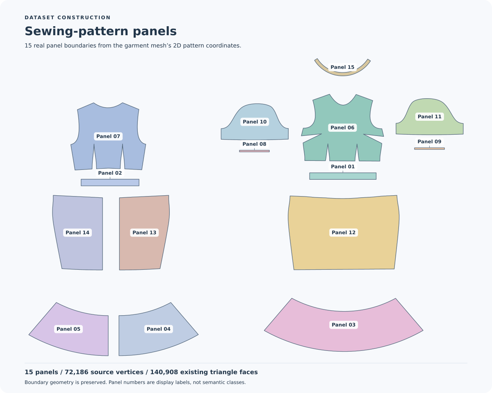
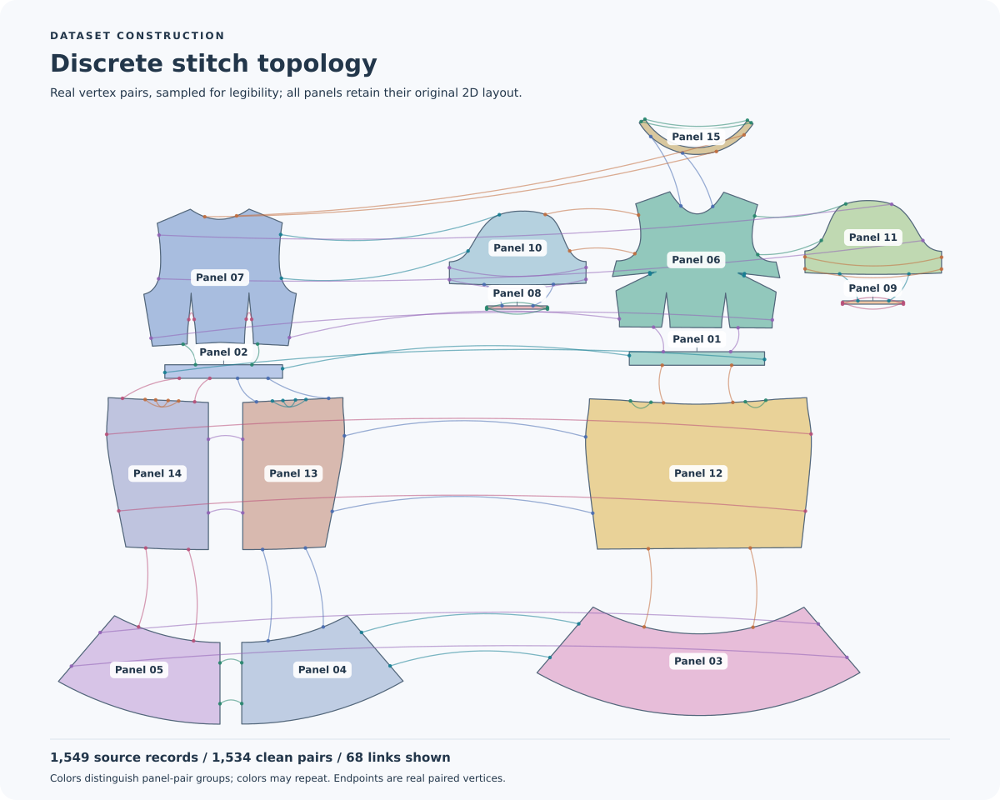
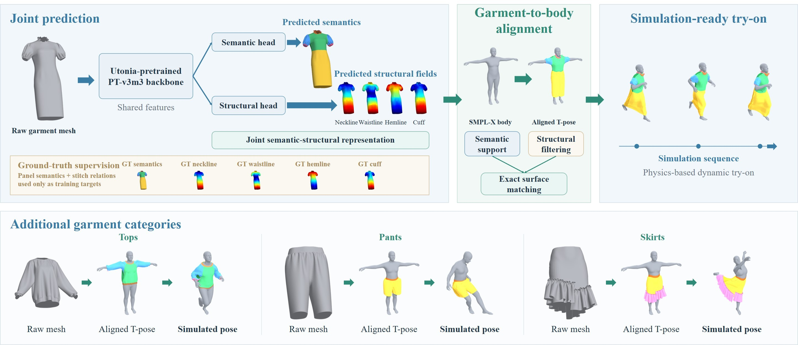

01 · 2D sewing pattern
Read the true panel geometry
Fifteen panels are reconstructed from the sample's physical 2D pattern coordinates and arranged only for readable display.

We study fine-grained 3D garment part understanding on assembled garment meshes. Unlike garment-category segmentation, our task assigns functional labels within each garment and augments discrete semantics with continuous topology-aware structural fields for anatomy-aware virtual try-on.
A unified 12-class vertex-level label space captures collar, waist, hem, cuff, sleeve, front/back regions, pockets, ruffles, and hats.
Four continuous fields encode mesh-geodesic position relative to neckline, waistline, hemline, and cuff anchors.
Semantics restrict anatomical support, while structural fields refine within-region correspondence and reduce penetration.
Dataset construction · verified dress example
The released dress is traced back to its original GarmageSet construction data. Its 2D panels and sewing topology accompany an already triangulated panel mesh; preprocessing then welds the exported seam-vertex pairs into one connected surface before semantic and structural annotation.
Fifteen panels are reconstructed from the sample's physical 2D pattern coordinates and arranged only for readable display.

The JSON stores 59 edge-level stitches; the exported OBJ separately provides 1,549 vertex-pair records, cleaned to 1,534 unique pairs.

Paired seam vertices are merged, their positions averaged, and all faces remapped to the welded mesh used by the annotation pipeline.
Scope of this preprocessing. The raw Style3D OBJ already contains triangulated panel faces, 2D pattern coordinates, panel groups, and discrete stitch pairs. The verified project code performs seam welding; it does not recreate the raw triangulation from the pattern JSON. The stitch diagram subsamples the full correspondence set only to remain readable.
Released reproducibility example
The same dress used in the qualitative results illustrates the complete target-construction path: functional semantics define garment regions, deterministic anchor curves define structural references, and mesh geodesics produce four normalized supervision fields.
Panel labels are transferred to the assembled surface in the shared 12-class vocabulary.
Neckline, waistline, hemline, and left/right cuff vertices are mapped through stitch welding.
Multi-source mesh distance is normalized by its finite P99 value and clipped to [0,1].
This visualization shows ground-truth target construction. At inference, the network predicts semantics and structural fields directly and does not receive these anchors.
Technical supplement
Follow how predicted garment semantics and structural fields determine anatomical correspondence, local deformation, and the one-sided Hem clearance constraint, then examine the Table 3 metrics.
How semantics identify anatomical support and structural fields refine relative position. Covers field construction, body coordinates, candidate selection, fallback, and the one-sided hem-clearance constraint.
Read the methodDefinitions of structural mismatch, attraction gap, hem-clearance violation, penetration, shared evaluation regions, and run-level aggregation.
Read the protocolOur pipeline jointly predicts fine-grained garment-part semantics and topology-aware structural fields, then uses the predicted cues for garment-to-body alignment before dynamic try-on simulation.

The task reasons about parts within an individual garment, rather than predicting only the garment category or original sewing-panel identity. Interactive PLY meshes below compare ground truth and prediction directly in 3D.
Vertex colors are read directly from the PLY files. The two views are synchronized for side-by-side comparison.
Per-class IoU (%). Semantic-only denotes the semantic-only PT-v3m3 baseline, while Ours adds topology-aware structural supervision with boundary weighting.
| Part | PT-v3m1 | Semantic-only | Ours |
|---|---|---|---|
| Body F. | 79.54 | 84.13 | 85.63 |
| Body B. | 80.15 | 85.27 | 86.69 |
| Lower F. | 81.58 | 87.79 | 88.92 |
| Lower B. | 80.73 | 87.89 | 88.99 |
| Sleeve | 88.91 | 89.74 | 90.76 |
| Collar | 63.78 | 66.51 | 69.88 |
| Waist | 36.13 | 47.66 | 52.31 |
| Cuff | 35.56 | 44.43 | 53.03 |
| Hem | 48.55 | 48.28 | 50.00 |
| 1.87 | 16.66 | 19.59 | |
| Ruffles | 66.36 | 88.87 | 88.80 |
| Hat | 91.53 | 91.83 | 93.46 |
Since overall metrics can be dominated by large garment regions, we also report all 12 semantic classes separately. Compared with the semantic-only PT-v3m3 variant, our joint representation improves 11 of the 12 classes, with particularly clear gains on localized and structure-sensitive parts: waist improves from 47.66% to 52.31%, cuff from 44.43% to 53.03%, and collar from 66.51% to 69.88%. These results suggest that continuous topology-aware structural cues complement discrete semantic labels particularly around localized garment structures and semantic interfaces.
Discrete labels answer what part?; structural fields answer where within the garment structure? Select a garment and structural field to compare ground truth and prediction directly on the 3D surface.
Magenta denotes an invalid structural channel. Dress has all four valid channels; Top has an invalid waistline channel; Skirt and Pants have invalid neckline and cuff channels. PLY vertex colors are preserved, with soft lighting added only to reveal surface shape.
Predicted part semantics constrain anatomically valid correspondences, and predicted structural fields refine within-region placement.
Interactive T-pose garment-to-body alignment examples for four garment categories. Drag to rotate, scroll to zoom, and right-drag to pan.
Table 3 results for +Fields are shown above. See the evaluation protocol for the complete three-setting comparison, metric definitions, and shared evaluation regions, or the alignment method for the correspondence and Hem-clearance algorithms.
Additional segmentation results, structural-field visualizations, simulation rollouts, evaluation details, and a runnable structural-field annotation example are available in the repository. The full training and alignment code is planned for release after acceptance.